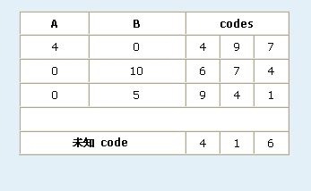

我们考虑的序列满足下列条件:
- 序列长度为 c,
- 序列中的每个元素都为 1-9,
- 序列中每个元素不重复出现.
一个单独的序列将被称为一个code.
当对给定的两个codes 估计他们的兼容性时，我们主要看两个值。第一个就是 (column A) 所有同时出现在两个codes 中且出现在同一位置的数字的和, 第二个就是(column B) 所有同时出现在两个codes 但出现在不同位置的数字和。
当我们给定c 个codes 和他们于某个未知code的兼容性信息时. 我们可以找到并把未知code表示出来. 下面是一个c = 3 的例子.
